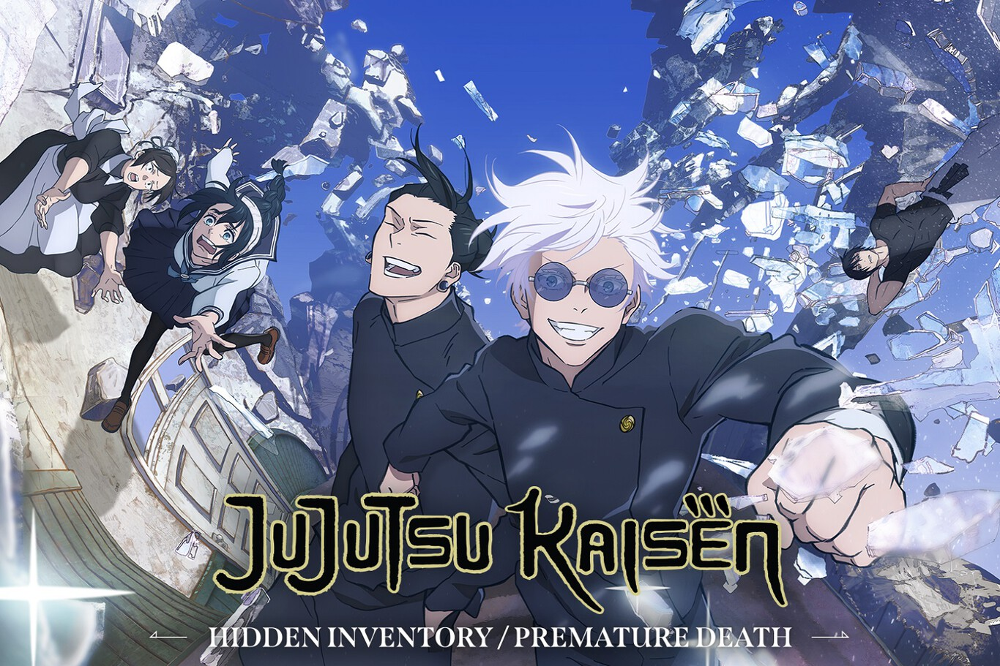

La historia del mundo de la hechiceria
Jujutsu Kaisen (呪術廻戦 Jujutsu Kaisen?) también conocido como Sorcery Fight (lit. Contiendas de Brujería/Guerra de Hechiceros) es una serie manga escrita e ilustrada por Gege Akutami. Empezó a publicarse oficialmente en la revista Weekly Shōnen Jump de Shueisha en marzo de 2018 y, hasta la fecha, tiene en su haber un total de veintidós tomos.
La historia del mundo de la hechiceria
Yuji Itadori es un genio en el atletismo. Pero no tiene ningún interés de correr en círculos, está contento como una almeja en el Club de Investigación Oculta. Aunque solo está en el club por diversión, ¡las cosas se ponen serias cuando aparece un verdadero espíritu en la escuela!
Cuando su abuelo está en su lecho de muerte, Yuji le hace una promesa; que hará actos amables para que muera rodeado de sus seres queridos, a diferencia de su abuelo.
Sin embargo, la vida de Yuji da un giro repentino cuando conoce a Megumi Fushiguro, un chamán que intenta recuperar un objeto maldito. Cuando los amigos de Yuji abren el objeto maldito que encontraron, las cosas van hacia el sur cuando los espíritus malditos que engendró comienzan a vagar en la escuela. Como Fushiguro y Yuji son casi derrotados por uno de los espíritus, Yuji se traga el objeto maldito y gana su poder. Como resultado, Yuji es maldecido por el objeto y es arrastrado al emocionante mundo de chamanes y espíritus malditos de Fushiguro.
Acerca de los personajes
Dentro de la franquicia podemos encontrar miles de personajes , unos mas entrañables que otros y algunos mas complejos como ejemplo tenemos a Kenjaku que a pesar de ser el villano de la historia es un ser del que no se sabe mucho sobre su historia , o hablando mas de un enlace colectivo entre los personajes tenemos la amistad que hubo entre los personajes de Gojo y Geto , quienes en un inicio fueron amigos pero por circunstancias de la vida terminaron enemistdos y con el corazon roto Gojo termino dando fin a la existencia de su mejor amigo.
Algunos de los personajes principales son :
Juji Itadori
Megumi Fushiguro
Nobara Kugisaki
Gojo Satoru
Nanami Kento
Maki Zenin
El impresionante trabajo de animacion de mappa
La adaptación realizada por MAPPA, la cual dio comienzo en otoño de 2020, enamoró a los fans del manga original, y entre ellos hay que incluir al propio autor. muestra de ello es su opening numero 4 , el primero de la segunda temporada https://www.youtube.com/watch?v=p8hB3N0Az8I
